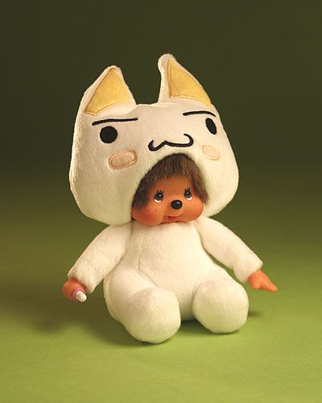
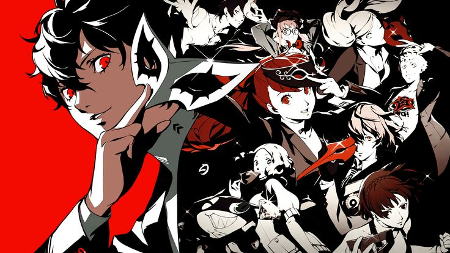
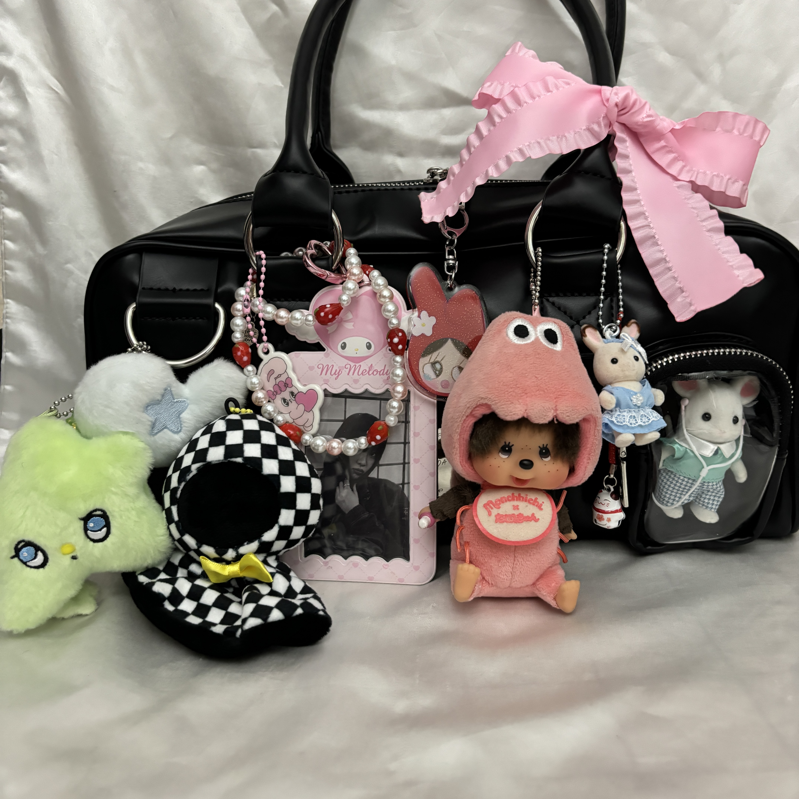

Hello! My name is Kienna, I am a rising senior and my major is Asian American Studies. I am attending class from abroad, but I am really excited to be taking this course and learning about web developement.
I hope that after attending this class, I will be more knowledgable in web development. I will also be doing my major capstone course this year, so I hope this class will be able to help me when I am collecting data, espcially since I am planning on working with underserved populations in my hometown, Long Beach.
Things I love!
- Collecting small trinkets!.
- Playing Persona 5 and sims for hours
- Journaling! I have a lot of stickers and I love using them on random things!
- Eating a lot of yummy food! Trying out and exploring new food places is my favorite past time!
- Drawing!